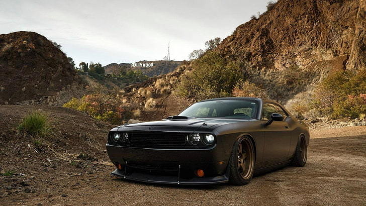
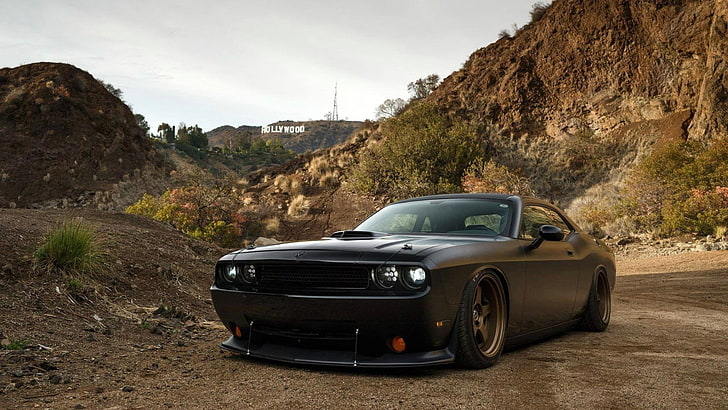

TOYOTA
AE86
The AE86 series of the Toyota Corolla Levin and Toyota Sprinter Trueno are small, front-engine/rear-wheel-drive models within the front-engine/front-wheel-drive fifth generation Corolla (E80) range—marketed by Toyota from 1983 to 1987 in coupé and liftback configurations.
Read More
MAZDA.
RX7
The Mazda RX-7 is a front-engine, rear-wheel-drive, rotary engine-powered sports car that was manufactured and marketed by Mazda from 1978 until 2002 across three generations, all of which made use of a compact, lightweight Wankel rotary engine.
Read More
PORCHE.
911 GT3 RS
The Porsche 911 GT3 is a high-performance homologation model of the Porsche 911 sports car. It is a line of high-performance models, which began with the 1973 911 Carrera RS. The GT3 has had a successful racing career in the one-make national and regional Porsche Carrera Cup and GT3 Cup Challenge series, as well as the international Porsche Supercup supporting the FIA F1 World Championship.
Read More
FERRRI
F40
The Ferrari F40 (Type F120) is a mid-engine, rear-wheel drive sports car[12] engineered by Nicola Materazzi with styling by Pininfarina. It was built from 1987 until 1992, with the LM and GTE race car versions continuing production until 1994 and 1996 respectively.
Read More
DODGE
CHALLENGER
The Dodge Challenger is the name of three different generations of automobiles (two of those being pony cars) produced by American automobile manufacturer Dodge. However, the first use of the Challenger name by Dodge was in 1959 for marketing a "value version" of the full-sized Coronet Silver Challenger.
Read More


 
